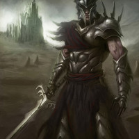
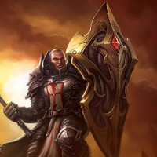
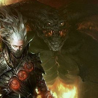
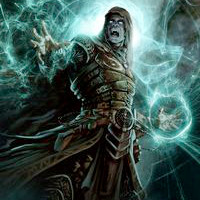

The charge never comes. The beast doesn't advance. The creature is waiting for something. Suddenly, you hear several voices in unison. Many voices but one at the same time. They whisper, "The fiercer the world, the greater the glory. This beast knows you as it's master now. Carve out your bloody empire. You have found the crown. Wear it. It will help gather other abominations to you. The crown has found you. Serve us and know true power. You have found the crown, the crown has found you..." and the voices trail off, repeating this phrase. You glance around the room. You're alone, aside from this monstrosity awaiting your orders. Yes, this is what you came for, the favor of the Endbringers. The ancient harbingers of chaos that the prophecies had spoken of, forgotten by time. Their unholy artifact, the Doom Crown, which you have claimed, making you their Emperor. With it, you will become Death incarnate and bend this world to your will. You knew you were meant for great things, and you intend to ruthlessly attain them. Your eyes fall to the large iron set of double doors before you. These are all that remain between you and destiny. Not for long:




Call Forth the Power of your Sword
Call Upon the Magic of the Shield
Command the Beast Under Your Control
Harness the Dark Energy Bestowed Upon You
You hold out the spectral blade and it doubles in size, but remains light as a dagger in your hand. Obsidian armor manifests around you, encasing you in formidable pieces of plate and chain. You move with purpose, advancing rapidly. You begin a sword dance to gain momentum, then finish the dance with a sweeping, overhead arcing slash and slice cleanly through the doors. The pieces of the door fall away and hit the floor with a loud clang, echoing back in to the room. Daylight breaks the threshold, flooding in and alighting your surroundings with the suns' rays. You take a step forward, crushing the pieces of door under boot, shadow-like energy swirling about you. Setting your mind to the task at hand, razor sharp, preparing yourself for the reign of death you are about to embark upon. The very world trembles with your every footfall. Soon they will all come to know you. Fear you. Hate you. Revere you. But in the end, they will all kneel before you. You, Emperor of Doom.
The call of a thousand hungry, lost souls beckon you to unleash them from their prison within your shield. They pledge their servitude to you and you answer in kind, lashing their will to yours. You turn your shield toward the doors and speak the words of binding, followed by the words of release. A fountain of grizzly, spectral creatures erupts from the shield, pouring out like a tidal wave of animosity. They crash in to the doors, clawing, gnashing, tearing at the iron and stone relentlessly, sheering away the doors in a frenzied rage. In a matter of moments, the door is reduced to rubble before the surge of the spectral horde, opening the way for you to emerge from the darkness, a symbolic rebirth to any unfortunate enough to witness this moment in time. Your army of souls spreads like a cancer out before you, as you follow in their wake, blood rising knowing that this is just the beginning. This is the start of a conquest of blood, to which all the world will come to know you. Fear you. Hate you. Revere you. But in the end, they will all kneel before you. You, Emperor of Doom.
You extend your arm forth, hand and fingers outstretched toward the door, and the beast acknowledges. It swings its head toward you, gives a knowing look, and then like a tempest of rage, the creature surges forward, howling it's murderous intent. Dark energy crackling about your monstrous servant, the doors explode from the assault, stone and iron debris flying in every direction. Rubble and ash are all that remain as you stride up next to the beast, placing a hand on it's hulking shoulder. It's increibly large paws leave massive scorched imprints in the ground as it walks, and you can't help but be impressed by the effectiveness of your new companion. You gaze out into the daylight of the world beyond, knowing that it is only a matter of time before it all falls within your grasp. You let forth a booming laugh, and then with the lightest of shoves in the direction of your choosing, you send forth your minion into the world to wreak havoc in your name so that the world may cower before you. They will soon all come to know you. Fear you. Hate you. Revere you. But in the end, they will all kneel before you. You, Emperor of Doom.
You approach the door and as you do so, you discard the sword and shield you had summoned previously, calling forth black magics. The weapons turn to mist as you release them. You begin harnessing the violent storm that is raging inside of you by slowly tracing patterns in the air. You start to hear the whispers, souls being drawn from the ether in to your dark ritual, pledging their allegience and power for you to bend to your purpose. As you step closer to the door, you halt your advance, and begin drawing in the darkness and shadows, shaping them in to a ball of surging power. You clap your hands together, and a pyramid of pure black appears in the air in front of you. Tracing a circle around it, you produce a violet sphere that surrounds the pyramid. The air crackles and you send the object flashing into the doors in front of you. Nothing happens as the objects disappear in to the door. Then, chaos reigns as the door erupts in an explosion of energy. Reality warps and is ripped asunder. An implosion and everything that once stood where the door had been is vaporized. It's all simply just gone. You marvel at the terrible power you now wield, knowing that should any seek to challenge you, you will crush them. For they will all soon come to know you. Fear you. Hate you. Revere you. But in the end, they will all kneel before you. You, Emperor of Doom.